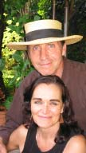

C.G. Jung Society, Seattle C.G. Jung Society, Seattle
C.G. Jung Society, Seattle C.G. Jung Society, SeattleLecture: Friday, May 8, 2005, 7:30 to 9:30 p.m.
Good Shepherd Center, Room 202, 4649 Sunnyside Ave. N., Seattle
$10 member, $15 nonmembers
For more events and interviews, please check the Hands of Alchemy Web site.

In 1979, at the height of a successful career, painter Jerry Wennstrom had a spiritual epiphany that mandated he surrender all attachments and destroy his life’s work of paintings and sculptures. “It was the letting go of everything I thought was most me. It felt like a leap into the highest expression of creativity,” he said. He walked out of his Nyack, New York, loft, and for the next 10 years lived with nothing, wandering, seeking, listening, and trusting.As experienced speakers, artists and workshop leaders, Jerry and Marilyn put on a unique and participatory multimedia/musical event that challenges people to think about themselves, their lives and their own spirituality. No one leaves these events without something to ponder. As part of the presentation, they show a Parabola documentary film that was made about Jerry and his art, In the Hands of Alchemy. The nature of the video, and the personal stories that Jerry tells, stir the deepest part of what is most human in all of us. The archetypal nature of his journey offers gifts and implications to be explored by anyone willing to courageously open to their own true potential. Jerry gives voice, definition and meaning to the deeper myth running through the undercurrents of our individual daily lives.
Workshop: Saturday, May 7, 2005, 10 a.m. to 4 p.m.
Whidbey Island
$46 members, $56 nonmembers (fee includes lunch)
To learn about preregistering for the workshop, see Preregistration Policy and Form.
In this workshop we will draw upon Jung’s understanding of the individuation process, and the role that image and symbol may play in this process. We will also draw from personal stories and experience to investigate how the transcendent function helps us to move from conflict to resolution, as long as we contain ourselves (in alignment with the alchemical tradition) and hold the tension between the opposites. We will explore together how these personal and transpersonal images that “help us over” become known. Learning to court, hold and work with these images, they become uniting symbols that combine seemingly contradictory elements into a unique whole, leading to new directions and patterns for growth.
This event will take place in the workshop space of the facilitators at their home on Whidbey Island, surrounded by Jerry's murals and life-size interactive sculptures. Using drumming and chanting, storytelling, personal sharing, and artistic expression, the goal of this workshop is to create a space for joyful and willing exploration of the unconscious and the healing power of the images and symbols that arise from it.
Jerry Wennstrom is an artist, an author of The Inspired Heart: An Artist’s Journey of Transformation, and is the subject of a Parabola Magazine documentary film. He lectures and teaches nationally, and is a consultant to many on the artistic/spiritual path.
Marilyn C. Strong holds a B.A. in Religion and Adult Education and an M.A. in Spirituality and Culture. She is a skilled group facilitator, counselor, drummer, singer, and has studied ritual and ceremony, depth psychology, Jungian dream analysis, and alchemy.
Directions : Take Interstate 5 (I-5) North to Mukilteo/Clinton Ferry to Whidbey Island exit. Then just follow the signs to the Ferry. Once you are on Whidbey and driving off of the ferry, stay on that highway (525) for about one mile to the top of the long hill. The first road that crosses the highway at the top of the hill is Campbell Road. Go left on Campbell and stay on it for less than 1/4 mi and you will cross over Cultus Bay Rd. Continuing on Campbell rd, our driveway is 1/4-ish mile beyond Cultus Bay rd. on the left. You will see the driveway for The Waldorf School/Chinook/Whidbey Institute on the left and Fox Hill Lane is the next drive past Chinook’s driveway, also on the left. That is the beginning of our driveway. There is a picture of a fox up in the tree at the beginning of the driveway. Drive back Fox Hill a little ways and you’ll come to a fork in the road. Take the middle driveway with a sign in the tree “STRONG” 6365 S. Fox Hill Lane, that is our driveway.
Updated: 24 March, 2005
webmaster@jungseattle.org